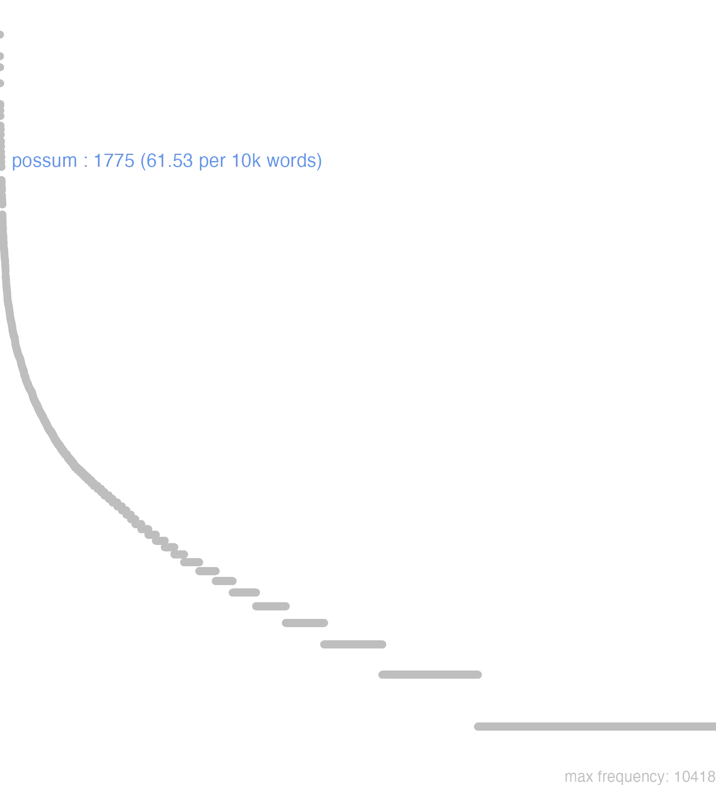

130 possum
130.0.0.1 bases lexicais
id: http://lila-erc.eu/data/id/lemma/118569
classe: verbo
paradigma: irregular
outras grafias: posso
variantes do lema:
posso, possum presente | indicativo | 1ª pessoa singular | voz ativa
posse presente | infinitivo | ativo
poterit futuro | indicativo | 3ª pessoa singular | voz ativa
potui pretérito perfeito | indicativo | 1ª pessoa singular | voz ativa
pŏtŭī
no data
130.0.0.2 dicionários tradicionais
possĭem
arc. = possim, pres. do subj. de possum Plaut. Capt 996.
possum potes, posse, potŭī
v. tr.
arc. = possim, pres. do subj. de possum Plaut. Capt 996.
possum potes, posse, potŭī
v. tr.
1 I-Sent. próprio Poder, ser capaz de Cíc. Fam. 5; 14, 2; Cíc. Fam. 6, 13, 1.
2 II-Daí Ter poder, ser eficaz, ter influência Cíc. Verr. 5, 97; Cíc. Tusc. 2, 34.
3 II-Impess.: É possível:
[EXEMPLOS]
3
non potest ‘não é possível, é impossível’ Ter. Phorm. 303; Cíc. Tusc. 1, 23.
potes potest
2ª e 3ª pess. sing. do pres. do indicat. de possum.
potēsse
inf. pres. arc. de possum = posse Plaut. Cist. 30.
potēssem
imperf. do subj. arc. de possum = possem.
potŭī
perf. de possum.
Pōssŭm pŏtĕs pŏtŭī pōssĕ
v. intrans. e trans. de pos ou potis e sum.
v. intrans. e trans. de pos ou potis e sum.
1 poder, ter o poder de, sêr capaz de.
2 Cic. dever, ter obrigação de.
3 Ter. Cic. poder, ter poder, ascendencia, superioridade, influencia, credito.
4 Cic. sêr poderoso, efficaz.
5 Cic. estar em bom estado, estar são, operar bem.
6 Cic. sêr possivel, poder sêr, poder dar-se.
[EXEMPLOS]
1
hoc amplius si quid poteris Cic Se poderes mais do que isto
nihil posse contra… Cic Não ter poder algum contra…
non omnia possumus Virg Não somos capazes de tudo
non possum non… Cic Não posso deixar de, sou obrigado a, é necessário que eu…
non possum quin Plaut. Cic Não posso deixar de, sou obrigado a, é necessário que eu…
omnia posse Liv Sêr omnipotente, sêr absoluto
possum scire…? Cic Posso saber…?
potest fieri ut fallar Cic Póde dar-se que eu me engane, é possível o enganar-me
quantum potero Cic Quanto eu poder, quanto estiver nas minhas forças ou na minha mão
2
quod unus tu facere maxime potuisti Cic A ti, sobre tudo, é que cumpre fazer isto
3
quæ in me plus potest Plaut A que em mim tem mais poder
6
i quantum potest Plaut Corre quanto poderes, vae n’um pé só
medicum arcessam quantum potest… Plaut Chamarei o medico o mais depressa possivel
non potest Ter Não pode sêr, não é possível
potest ut… Plaut Pode ser que, quiçá, talvez
si quid potest Liv Se é possível
ut potest Cic Consoante poder ser
Possiem -ies -iet
Plaut. por Possim, is, it. Possum potes potui posse Potessem -es & c. -et
Plaut. por Possem, es, et, & c. Cic. por Posse Potesse Ter. por Potes Pote
Possum potes
Praepossum apud Tac.
Praepossum apud Tac.
1 poder, ou ter poder;
[EXEMPLOS]
X
fieri potest he possivel interdum tacetur fieri, vel facere
Possum tes potui posse
1 poder
130.0.0.3 dados de corpus
![This chart plots collocate by scoreSUBST, for the headword possum here are all the values plotted: collocate: non; scoreSUBST: 0. collocate: fio; scoreSUBST: 0. collocate: dico; scoreSUBST: 0. collocate: fero; scoreSUBST: 0. collocate: quis; scoreSUBST: 0. collocate: nemo; scoreSUBST: 0. collocate: modus; scoreSUBST: 2. collocate: si; scoreSUBST: 0. collocate: nihil; scoreSUBST: 0. collocate: efficio; scoreSUBST: 0. collocate: ne; scoreSUBST: 0. collocate: ut; scoreSUBST: 0. collocate: scio; scoreSUBST: 0. collocate: enim; scoreSUBST: 0. collocate: quantum; scoreSUBST: 0. collocate: facio; scoreSUBST: 0. collocate: intellego; scoreSUBST: 0. collocate: perspicio; scoreSUBST: 0. collocate: nec; scoreSUBST: 0. collocate: nisi; scoreSUBST: 0. collocate: multum; scoreSUBST: 0. collocate: capio; scoreSUBST: 0. collocate: consequor; scoreSUBST: 0. collocate: quidem; scoreSUBST: 0. collocate: quantus; scoreSUBST: 0. collocate: arbitror; scoreSUBST: 0. collocate: prouideo; scoreSUBST: 0. collocate: sustineo; scoreSUBST: 0. collocate: sine; scoreSUBST: 0. collocate: inuenio; scoreSUBST: 0. collocate: pactum; scoreSUBST: 2. collocate: quoad; scoreSUBST: 0. collocate: sano; scoreSUBST: 0. collocate: aspicio; scoreSUBST: 0. collocate: noceo; scoreSUBST: 0. collocate: confido; scoreSUBST: 0. collocate: contingo; scoreSUBST: 0. collocate: transigo; scoreSUBST: 0. collocate: irascor; scoreSUBST: 0. collocate: commode; scoreSUBST: 0. collocate: assequor; scoreSUBST: 0. collocate: proficio; scoreSUBST: 0. collocate: honeste; scoreSUBST: 0. collocate: effugio; scoreSUBST: 0. collocate: conspicio; scoreSUBST: 0. collocate: impello; scoreSUBST: 0. collocate: perficio; scoreSUBST: 0. collocate: aliter; scoreSUBST: 0. collocate: reperio; scoreSUBST: 0. collocate: uere; scoreSUBST: 0](./Media/wordcloud__xx112-111-115-115-117-109xx__BY_collocate_scoreSUBST.webp)
![This chart plots collocate by scoreADJ, for the headword possum here are all the values plotted: collocate: non; scoreADJ: 0. collocate: fio; scoreADJ: 0. collocate: dico; scoreADJ: 0. collocate: fero; scoreADJ: 0. collocate: quis; scoreADJ: 0. collocate: nemo; scoreADJ: 0. collocate: modus; scoreADJ: 0. collocate: si; scoreADJ: 0. collocate: nihil; scoreADJ: 0. collocate: efficio; scoreADJ: 0. collocate: ne; scoreADJ: 0. collocate: ut; scoreADJ: 0. collocate: scio; scoreADJ: 0. collocate: enim; scoreADJ: 0. collocate: quantum; scoreADJ: 0. collocate: facio; scoreADJ: 0. collocate: intellego; scoreADJ: 0. collocate: perspicio; scoreADJ: 0. collocate: nec; scoreADJ: 0. collocate: nisi; scoreADJ: 0. collocate: multum; scoreADJ: 0. collocate: capio; scoreADJ: 0. collocate: consequor; scoreADJ: 0. collocate: quidem; scoreADJ: 0. collocate: quantus; scoreADJ: 0. collocate: arbitror; scoreADJ: 0. collocate: prouideo; scoreADJ: 0. collocate: sustineo; scoreADJ: 0. collocate: sine; scoreADJ: 0. collocate: inuenio; scoreADJ: 0. collocate: pactum; scoreADJ: 0. collocate: quoad; scoreADJ: 0. collocate: sano; scoreADJ: 0. collocate: aspicio; scoreADJ: 0. collocate: noceo; scoreADJ: 0. collocate: confido; scoreADJ: 0. collocate: contingo; scoreADJ: 0. collocate: transigo; scoreADJ: 0. collocate: irascor; scoreADJ: 0. collocate: commode; scoreADJ: 0. collocate: assequor; scoreADJ: 0. collocate: proficio; scoreADJ: 0. collocate: honeste; scoreADJ: 0. collocate: effugio; scoreADJ: 0. collocate: conspicio; scoreADJ: 0. collocate: impello; scoreADJ: 0. collocate: perficio; scoreADJ: 0. collocate: aliter; scoreADJ: 0. collocate: reperio; scoreADJ: 0. collocate: uere; scoreADJ: 0](./Media/wordcloud__xx112-111-115-115-117-109xx__BY_collocate_scoreADJ.webp)
![This chart plots collocate by scoreVERBO, for the headword possum here are all the values plotted: collocate: non; scoreVERBO: 0. collocate: fio; scoreVERBO: 4. collocate: dico; scoreVERBO: 2. collocate: fero; scoreVERBO: 2. collocate: quis; scoreVERBO: 0. collocate: nemo; scoreVERBO: 0. collocate: modus; scoreVERBO: 0. collocate: si; scoreVERBO: 0. collocate: nihil; scoreVERBO: 0. collocate: efficio; scoreVERBO: 3. collocate: ne; scoreVERBO: 0. collocate: ut; scoreVERBO: 0. collocate: scio; scoreVERBO: 2. collocate: enim; scoreVERBO: 0. collocate: quantum; scoreVERBO: 0. collocate: facio; scoreVERBO: 1. collocate: intellego; scoreVERBO: 2. collocate: perspicio; scoreVERBO: 3. collocate: nec; scoreVERBO: 0. collocate: nisi; scoreVERBO: 0. collocate: multum; scoreVERBO: 0. collocate: capio; scoreVERBO: 2. collocate: consequor; scoreVERBO: 2. collocate: quidem; scoreVERBO: 0. collocate: quantus; scoreVERBO: 0. collocate: arbitror; scoreVERBO: 2. collocate: prouideo; scoreVERBO: 2. collocate: sustineo; scoreVERBO: 2. collocate: sine; scoreVERBO: 0. collocate: inuenio; scoreVERBO: 2. collocate: pactum; scoreVERBO: 0. collocate: quoad; scoreVERBO: 0. collocate: sano; scoreVERBO: 2. collocate: aspicio; scoreVERBO: 2. collocate: noceo; scoreVERBO: 2. collocate: confido; scoreVERBO: 2. collocate: contingo; scoreVERBO: 2. collocate: transigo; scoreVERBO: 2. collocate: irascor; scoreVERBO: 2. collocate: commode; scoreVERBO: 0. collocate: assequor; scoreVERBO: 2. collocate: proficio; scoreVERBO: 2. collocate: honeste; scoreVERBO: 0. collocate: effugio; scoreVERBO: 2. collocate: conspicio; scoreVERBO: 2. collocate: impello; scoreVERBO: 2. collocate: perficio; scoreVERBO: 2. collocate: aliter; scoreVERBO: 0. collocate: reperio; scoreVERBO: 2. collocate: uere; scoreVERBO: 0](./Media/wordcloud__xx112-111-115-115-117-109xx__BY_collocate_scoreVERBO.webp)
![This chart plots collocate by scoreADV, for the headword possum here are all the values plotted: collocate: non; scoreADV: 5. collocate: fio; scoreADV: 0. collocate: dico; scoreADV: 0. collocate: fero; scoreADV: 0. collocate: quis; scoreADV: 0. collocate: nemo; scoreADV: 0. collocate: modus; scoreADV: 0. collocate: si; scoreADV: 0. collocate: nihil; scoreADV: 0. collocate: efficio; scoreADV: 0. collocate: ne; scoreADV: 0. collocate: ut; scoreADV: 0. collocate: scio; scoreADV: 0. collocate: enim; scoreADV: 2. collocate: quantum; scoreADV: 3. collocate: facio; scoreADV: 0. collocate: intellego; scoreADV: 0. collocate: perspicio; scoreADV: 0. collocate: nec; scoreADV: 0. collocate: nisi; scoreADV: 0. collocate: multum; scoreADV: 2. collocate: capio; scoreADV: 0. collocate: consequor; scoreADV: 0. collocate: quidem; scoreADV: 1. collocate: quantus; scoreADV: 0. collocate: arbitror; scoreADV: 0. collocate: prouideo; scoreADV: 0. collocate: sustineo; scoreADV: 0. collocate: sine; scoreADV: 0. collocate: inuenio; scoreADV: 0. collocate: pactum; scoreADV: 0. collocate: quoad; scoreADV: 2. collocate: sano; scoreADV: 0. collocate: aspicio; scoreADV: 0. collocate: noceo; scoreADV: 0. collocate: confido; scoreADV: 0. collocate: contingo; scoreADV: 0. collocate: transigo; scoreADV: 0. collocate: irascor; scoreADV: 0. collocate: commode; scoreADV: 2. collocate: assequor; scoreADV: 0. collocate: proficio; scoreADV: 0. collocate: honeste; scoreADV: 2. collocate: effugio; scoreADV: 0. collocate: conspicio; scoreADV: 0. collocate: impello; scoreADV: 0. collocate: perficio; scoreADV: 0. collocate: aliter; scoreADV: 2. collocate: reperio; scoreADV: 0. collocate: uere; scoreADV: 2](./Media/wordcloud__xx112-111-115-115-117-109xx__BY_collocate_scoreADV.webp)
![This chart plots collocate by scoreFUNC, for the headword possum here are all the values plotted: collocate: non; scoreFUNC: 0. collocate: fio; scoreFUNC: 0. collocate: dico; scoreFUNC: 0. collocate: fero; scoreFUNC: 0. collocate: quis; scoreFUNC: 0. collocate: nemo; scoreFUNC: 0. collocate: modus; scoreFUNC: 0. collocate: si; scoreFUNC: 20. collocate: nihil; scoreFUNC: 0. collocate: efficio; scoreFUNC: 0. collocate: ne; scoreFUNC: 20. collocate: ut; scoreFUNC: 10. collocate: scio; scoreFUNC: 0. collocate: enim; scoreFUNC: 0. collocate: quantum; scoreFUNC: 0. collocate: facio; scoreFUNC: 0. collocate: intellego; scoreFUNC: 0. collocate: perspicio; scoreFUNC: 0. collocate: nec; scoreFUNC: 0. collocate: nisi; scoreFUNC: 20. collocate: multum; scoreFUNC: 0. collocate: capio; scoreFUNC: 0. collocate: consequor; scoreFUNC: 0. collocate: quidem; scoreFUNC: 0. collocate: quantus; scoreFUNC: 0. collocate: arbitror; scoreFUNC: 0. collocate: prouideo; scoreFUNC: 0. collocate: sustineo; scoreFUNC: 0. collocate: sine; scoreFUNC: 10. collocate: inuenio; scoreFUNC: 0. collocate: pactum; scoreFUNC: 0. collocate: quoad; scoreFUNC: 0. collocate: sano; scoreFUNC: 0. collocate: aspicio; scoreFUNC: 0. collocate: noceo; scoreFUNC: 0. collocate: confido; scoreFUNC: 0. collocate: contingo; scoreFUNC: 0. collocate: transigo; scoreFUNC: 0. collocate: irascor; scoreFUNC: 0. collocate: commode; scoreFUNC: 0. collocate: assequor; scoreFUNC: 0. collocate: proficio; scoreFUNC: 0. collocate: honeste; scoreFUNC: 0. collocate: effugio; scoreFUNC: 0. collocate: conspicio; scoreFUNC: 0. collocate: impello; scoreFUNC: 0. collocate: perficio; scoreFUNC: 0. collocate: aliter; scoreFUNC: 0. collocate: reperio; scoreFUNC: 0. collocate: uere; scoreFUNC: 0](./Media/wordcloud__xx112-111-115-115-117-109xx__BY_collocate_scoreFUNC.webp)
![This charts plots the frequency of lemma by author_Frequencies. The Cicero subcorpus registers the highest normalized frequency, with the value of 69.9 and an absolute frequency of 1122. The Caesar subcorpus follows, with a normalized frequency of 67.98 and an absolute frequency of 180. the subcorpus with the least normalized frequency is Suetonius with the normalized value of 11.03 and an absolute freqeuncy of 1. here are all the values: subcorpus: Caesar ; normalized frequency: 180 ; absolute frequency: 67.9809653297077. subcorpus: Cicero ; normalized frequency: 1122 ; absolute frequency: 69.8960903042536. subcorpus: Horatius ; normalized frequency: 28 ; absolute frequency: 24.8645768581831. subcorpus: Ovidius ; normalized frequency: 16 ; absolute frequency: 27.4536719286205. subcorpus: Phaedrus ; normalized frequency: 28 ; absolute frequency: 42.5079702444208. subcorpus: Sallustius ; normalized frequency: 29 ; absolute frequency: 26.899174473611. subcorpus: Seneca ; normalized frequency: 331 ; absolute frequency: 61.7756294208768. subcorpus: Suetonius ; normalized frequency: 1 ; absolute frequency: 11.0253583241455. subcorpus: Tacitus ; normalized frequency: 9 ; absolute frequency: 30.8959835221421. subcorpus: Vergilius ; normalized frequency: 9 ; absolute frequency: 17.3745173745174. subcorpus: Hieronymus ; normalized frequency: 22 ; absolute frequency: 49.4270950348236](./Media/barchart__xx112-111-115-115-117-109xx__lemma_BY_author_Frequencies.webp)
![This charts plots the frequency of lemma by genre_Frequencies. The Prosa.filosófica subcorpus registers the highest normalized frequency, with the value of 77.92 and an absolute frequency of 473. The Prosa.filosófica subcorpus follows, with a normalized frequency of 77.92 and an absolute frequency of 473. the subcorpus with the least normalized frequency is Poesia.trágica with the normalized value of 16.5 and an absolute freqeuncy of 19. here are all the values: subcorpus: Prosa.histórica ; normalized frequency: 219 ; absolute frequency: 53.3119111955014. subcorpus: Prosa.filosófica ; normalized frequency: 473 ; absolute frequency: 77.9229337243209. subcorpus: Prosa.oratória ; normalized frequency: 719 ; absolute frequency: 69.0330571370964. subcorpus: Prosa.epistolográfica ; normalized frequency: 242 ; absolute frequency: 64.1246455920931. subcorpus: Poesia.lírica ; normalized frequency: 30 ; absolute frequency: 25.2376545806343. subcorpus: Poesia.didática ; normalized frequency: 42 ; absolute frequency: 35.6264314191195. subcorpus: Poesia.trágica ; normalized frequency: 19 ; absolute frequency: 16.5045170257123. subcorpus: Poesia.épica ; normalized frequency: 9 ; absolute frequency: 17.3745173745174. subcorpus: Prosa.ficcional ; normalized frequency: 22 ; absolute frequency: 49.4270950348236](./Media/barchart__xx112-111-115-115-117-109xx__lemma_BY_genre_Frequencies.webp)
![This charts plots the frequency of lemma by period_Frequencies. The I.a.C. subcorpus registers the highest normalized frequency, with the value of 63.77 and an absolute frequency of 1370. The I.a.C. subcorpus follows, with a normalized frequency of 63.77 and an absolute frequency of 1370. the subcorpus with the least normalized frequency is II.d.C. with the normalized value of 26.18 and an absolute freqeuncy of 10. here are all the values: subcorpus: I.a.C. ; normalized frequency: 1370 ; absolute frequency: 63.7654177333023. subcorpus: I.d.C. ; normalized frequency: 373 ; absolute frequency: 57.0598133700474. subcorpus: II.d.C. ; normalized frequency: 10 ; absolute frequency: 26.1780104712042. subcorpus: IV.d.C. ; normalized frequency: 22 ; absolute frequency: 49.4270950348236](./Media/barchart__xx112-111-115-115-117-109xx__lemma_BY_period_Frequencies.webp)
negent si possunt
Cic.Ver.2.4.19.12
Que neguem, se podem [JDD]
poterit ne restitui
Cic.Att.3.15.6
Poderão ser recuperados? [JDD, de outra edição]
lucem aspicere vix possum
Cic.Att.3.7.1
mal posso ver a luz. [JDD]
Brutum abiectum quantum potui excitavi
Cic.Att.5.20.6
Tenho animado o quanto pude Bruto, que está deprimido. [JDD]
quis huius potentiam poterit sustinere
Cic.Phil.7.17.1
Quem poderá resistir o poder desse homem? [JDD]
poteramus ne inquies cum senatus censuisset
Cic.Lig.20
“Acaso podíamos”, dirás, “se o senado tinha decidido?” [JDD]
docebo quomodo fieri diues celerrime possis
Sen.Ep.119.1
Vou ensinar como podes tornar-te rapidamente rico. [JDD]
non poterant salua esse nisi uellent
Sen.Ep.121.24
Não podiam estar a salvo, se não quisessem isso. [JDD]
nec scriptum habeo nec possum edere
Cic.Ver.2.4.36.5
“Não tenho escrito e não posso apresentar.” [JDD]
aliter amicitiae stabiles permanere non possunt
Cic.Amici.74
De outra maneira as amizades não pode permanecer estáveis. [JDD]
quid faciemus si aliter non possumus
Cic.Att.2.1.8
O que vamos fazer se não podemos de outro modo? [JDD]
cum privatis non poterat transigi minore pecunia
Cic.Att.4.17.7
não se podia chegar a um acordo com os particulares por uma quantia menor de dinheiro. [JDD]
sed quo modo id consequi possis quaeris
Sen.Ep.22.1
mas queres saber como podes conseguir isso. [JDD]
ex eo colligere poteris quanta occupatione distinear
Cic.Att.2.23.1
Disso poderás deduzir em quanta ocupação estou envolvido. [JDD]
Contra potentes nemo est munitus satis ;
Phaed.2.6
Contra os poderosos ninguém está suficientemente protegido. [JDD]
nec iam ipsi agri regnum vestrum ferre possunt
Cic.Att.2.13.2
nem os próprios campos já podem suportar o vosso despotismo. [JDD]
conciliari nisi turpi ratione amor turpium non potest
Sen.Ep.29.11
o amor das pessoas torpes não pode ser conciliado a não ser com procedimento torpe. [JDD]
constantiam dico nescio an melius patientiam possim dicere
Cic.Lig.26
Digo constância? Não sei se poderia melhor dizer paciência. [JDD]
effice ut possis laudari si minus ut adgnosci
Sen.Ep.120.22
Faz com que possas ser louvado, se não, pelo menos reconhecido. [JDD]
poterat ne tantus animus efficere non iucundam senectutem
Cic.Sen.56
Por acaso poderia um espírito tão grande fazer a velhice não prazerosa? [JDD]
prorsus potest fieri dentes illi cum maxime cadunt
Sen.Ep.12.3
Pode perfeitamente tornar-se: principalmente quando lhe caem os dentes.” [JDD]
cum a proximis impetrare non possent ulteriores temptant
Caes.Gal.6.2.2
Como não pudessem consegui-lo dos mais próximos, tentam os mais afastados. [JDD]
conantibus priusquam id effici posset adesse Romanos nuntiatur
Caes.Gal.6.4.1
Aos que tentavam, antes que pudessem fazê-lo, é anunciado que os romanos estavam lá. [JDD, de outra edição]
ad illam celeritatem adde etiam si quid potes
Cic.Att.2.24.1
Àquela rapidez acrescenta ainda mais, se podes. [JDD]
id si putas me posse sanari cures velim
Cic.Att.3.12.2
Gostaria que cuidasses disso, se achas que eu posso ser salvo. [JDD]
non possum adduci ut suspicer te pecunia captum
Cic.Phil.1.33.3
Não posso ser levado a suspeitar que tu foste seduzido por dinheiro. [JDD]
poterit enim contrarium ei quod significare uolumus intellegi
Sen.Ep.9.2
pois se poderia entender o contrário daquilo que queremos expressar. [JDD]
nihil horum uetari potest non magis quam accersi
Sen.Ep.11.6
nada dessas coisas pode ser impedida e tampouco ser obtida. [JDD]
quid igitur hunc paucorum annorum accessio iuuare potuisset
Cic.Amici.11
Portanto, em que poderia ajudá-lo o acréscimo de uns poucos anos? [JDD]
hoc vero regnum est et ferri nullo pacto potest
Cic.Att.2.12.1
Isso na verdade é tirania e não pode ser tolerado de modo algum. [JDD]
non potest fieri ut non aliquando succedat multa temptanti
Sen.Ep.29.2
não pode ocorrer que não tenha êxito algumas vezes quem tenta muitas coisas.” [JDD]
et fuisset ita si homines transitum tempestatis exspectare potuissent
Cic.Att.2.21.2
e teria sido assim, se os homens tivessem podido aguardar a tempestade passar. [JDD]
atque utinam ut culpam sic etiam suspicionem uitare potuisses
Cic.Phil.1.33.8
E quem dera, assim como a culpa, tivesses podido também evitar a suspeita! [JDD]
nec enim secerni a fratre poterit tanta praesertim auctoritate
Cic.Phil.6.10.6
Pois não será possível separá-lo do irmão, especialmente com tão grande autoridade deste. [JDD]
Sallustium praesentem restituere in eius veterem gratiam non potui
Cic.Att.1.3.3
Não consegui devolver Salústio, que está aqui, à sua velha amizade. [JDD]
in discordia autem pax ciuilis esse nullo pacto potest
Cic.Phil.7.23.10
E na discórdia, por sua vez, não pode de modo algum haver paz entre os cidadãos. [JDD]
ex quo quantum boni sit in amicitia iudicari potest
Cic.Amici.23
Disso pode-se julgar quanto bem há na amizade. [JDD]
nihil accidere bono uiro mali potest non miscentur contraria
Sen.Prov.2.1
Nenhum mal pode acontecer a um homem bom: as coisas contrárias não se misturam. [JDD]
si enim es Romae iam me adsequi non potes
Cic.Att.3.5
Pois se estás em Roma, já não podes me alcançar. [JDD]
sed interea πολιτικὸς ἀνὴρ οὐδ’ ὄναρ quisquam inveniri potest
Cic.Att.1.18.6
Entretanto, quem pode ser encontrado como homem político ou sua sombra. [JDD, de outra edição]
verum tamen videbare mihi tempora peregrinationis commodius posse discribere
Cic.Att.2.1.4
mas me parece que podias organizar mais adequadamente os teus períodos de viagens. [JDD]
nec uero de uirtute constantia grauitate prouinciae Galliae taceri potest
Cic.Phil.3.13.1
E, na verdade, não é possível calar-se sobre o valor, a firmeza, a seriedade da província da Gália. [JDD]
omnia perspicere poteris de Caesare de Pompeio de ipsis iudiciis
Cic.Att.5.12.2
poderás examinar bem tudo, sobre César, sobre Pompeu, sobre os próprios julgamentos. [JDD]
ne id quidem facient negabunt id nisi sapienti posse concedi
Cic.Amici.18
Nem mesmo farão isso, dirão que isso não pode ser concedido a não ser ao sábio. [JDD]
delet enim ueritatem sine qua nomen amicitiae ualere non potest
Cic.Amici.92
pois destrói a verdade, sem a qual o nome de amizade não pode valer. [JDD]
et ingressus domum neminem voluit scire et non potuit latere
Vulg.Marc.7.24
e tendo entrado numa casa, quis que ninguém soubesse e não pôde ficar oculto. [JDD]
iam uero uirtuti Cn. Pompei quae potest oratio par inueniri
Cic.Man.29
Ora, que discurso pode ser encontrado equivalente ao valor de Cneu Pompeu? [JDD]
hac re significari magnum numerum ciuitatum suam uim sustinere non potuisse
Caes.Gal.4.3.1
por essa situação é indicado que um grande número de cidades não podem resistir à sua força. [JDD, de outra edição]
itaque tantum uictus efficere potuit quantum incolumis numquam est ausus optare
Cic.Man.25
E assim, vencido, ele pôde realizar tudo o que, estando são e salvo, nunca ousou desejar. [JDD]
multum cum in omnibus rebus tum in re militari potest Fortuna
Caes.Gal.6.30.2
Muito pode a Fortuna como em todas as coisas também em assunto militar. [JDD]
130.0.0.4 Diagrama de Zipf
